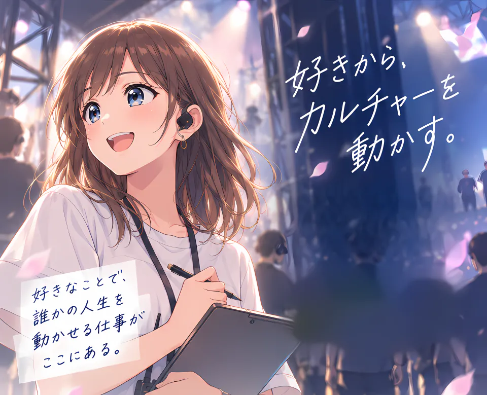
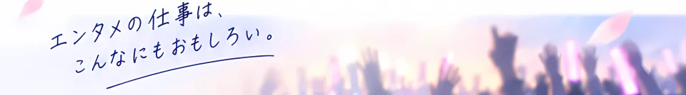
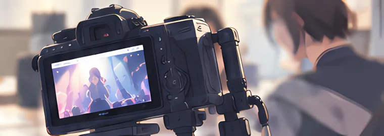
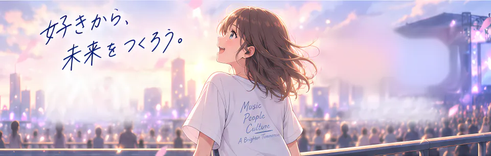

STORY
ある新入社員の、はじまりの物語
好きなことで生きていきたい。
そんな想いを胸に、アソビシステムでの一歩を踏み出した、
ある新入社員の物語です。

アソビシステムは、アーティスト・タレント・カルチャーを通して、
日本のエンタメシーンをつくるエンタテインメントカンパニーです。
WHAT
アーティスト・タレント・
カルチャーを通して、
たくさんの人にワクワクを
届けます。
WHY
“好き”のエネルギーが、
人や社会を前に進めると
私たちは信じています。
VISION
日本から生まれる
カルチャーを世界へ。
エンタメの力で、
もっと自由で楽しい社会を。
MOVIE
好きであふれる世界を、つくる仕事。
映像で、アソビシステムのリアルをのぞいてみてください。
INTERVIEW
気になるポイントを、採用担当が答えます。
アーティスト・タレントの活動を軸に、イベント・グッズ・デジタルコンテンツ・ブランド企画など、エンタメに関わる幅広い仕事に挑戦できます。
エンタメが好きという気持ちを出発点に、好奇心・行動力・チームでつくる姿勢を持った、さまざまなバックグラウンドのメンバーが活躍しています。
配属後も、先輩社員によるサポートや定期的な面談、研修プログラムを通じて、一人ひとりが成長し、チャレンジし続けられる環境を整えています。

STORY
好きなことで生きていきたい。
そんな想いを胸に、アソビシステムでの一歩を踏み出した、
ある新入社員の物語です。
JOB
多様なフィールドで、エンタメの可能性を広げていきます。
アーティストやイベントの
企画から実現まで、
エンタメの未来をつくる。

映像・SNS・ビジュアルなど
心を動かすコンテンツを
企画・制作する。
ファンと出会い、広げ、
共感をつくる。
作品の価値をもっと多くの人へ。
会社の成長を支え、
挑戦が続けられる環境をつくる。
管理・サポート・組織づくりで、
エンタメの未来を支える。
まだまだ、アソビシステムの仕事はたくさんあります。
FLOW
アソビシステムの仕事は、好きから始まり、
人やチームとつながりながら、
エンタメで社会に届けていくプロセスです。
世の中やファンの声、
現場の声から
課題を見つけます。
企画で世界を
よくできる方法を
考え、形にします。
社内外の仲間と連携し、
それぞれの強みを活かして
プロジェクトを進めます。
多くの人に届け、
反応を見ながら
次のチャレンジにつなげます。
GROWTH
安心してスタートできるように、段階的なオンボーディングで
一人ひとりの成長をサポートします。
会社・業界・仕事の流れを
知り、チームに慣れます。
先輩がしっかりサポートします。
先輩と一緒にプロジェクトに
参加し、実際の仕事に
チャレンジします。
小さなテーマから
主体的に取り組み、
できることの幅を広げていきます。
APPEAL
アソビシステムで働くことで、誰かの人生が動く。
自分の好きも、きっともっと広がっていきます。
好きなことが仕事の
スタートライン。
自分の興味や関心を、
仕事につなげられます。
アーティスト、タレント、
クリエイター、ビジネスなど
さまざまなバックグラウンドの
仲間と働けます。
やってみたいという気持ちを
大切にする文化があります。
年次に関係なく、
新しいことにチャレンジできます。
エンタメで、もっとたくさんの
“好き”に出会える社会を、一緒につくろう。
ENVIRONMENT
好きなことで、長く、安心して挑戦し続けられるように。
ライフスタイルに合わせて
柔軟に働ける、
フレックスタイム制度を
導入しています。
業務に応じて
リモートワークも可能。
場所にとらわれない
働き方を推進しています。
社会保険完備はもちろん、
健康診断・各種手当・
エンタメに関わる特別制度
など、安心して働ける環境
を整えています。
研修・勉強会の実施や
書籍購入補助など、
一人ひとりの成長と挑戦を
応援する制度が充実
しています。
RECRUIT
エンタメの未来を、一緒につくる仲間を募集しています。
FLOW & FAQ
一歩ずつ、あなたらしく。ご応募をお待ちしています。
応募フォームから
ご応募ください。
ご提出いただいた
書類をもとに選考します。
オンラインまたは
対面で実施します。
一緒に未来を
つくりましょう！
特別なスキルや経験は問いません。エンタメが好きという気持ちを出発点に、好奇心や行動力、チームでつくる姿勢を大切にしています。
どちらも「エントリー → 書類選考 → 面接（複数回） → 内定」の流れで進みます。面接の回数など詳しくは、選考の中でご案内します。
リモートワーク制度があり、業務に応じてリモートワークも可能です。対象や頻度は職種・業務により異なります。
応募の時期や職種によって異なります。詳しくは、選考の中でご案内します。
ご希望の職種については、選考の中でご相談いただけます。詳しくは、選考の中でご案内します。
